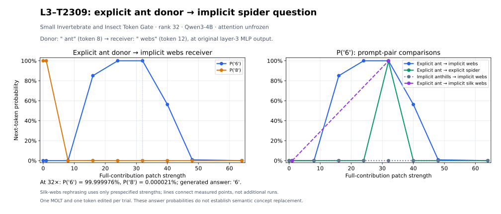

2026-10-13 · Qwen3-4B · layer 3 · MOLT 2309 · rank 32 · unfrozen eager attention · original MLP retained.
Dashboard feature name: Small Invertebrate and Insect Token Gate. Donor token " ant", zero-based position 8. Receiver token " webs", position 12. Indices include the chat template.
original receiver MLP output[12] += strength × (donor contribution[8] − receiver contribution[12])
contribution = scalar gate × input-dependent low-rank output
receiver gate = -0.0; donor gate = 1.339556336
exact implementation: z = (pre-normalization residual − checkpoint input_mean) / input_std
contribution = gate(z) × ((z @ V_2309) @ U_2309) × checkpoint output_std
The donor and receiver vectors are computed from clean runs. U/V weights are unchanged. The vector is added to the original raw layer-3 MLP output before residual addition. No MLP replacement and no attention freezing occur. The shared output-standardizer mean is not added as a per-feature contribution.

Receiver: How many legs does the animal that weaves webs have? Reply with only one digit.
Donor: How many legs does an ant have? Reply with only one digit.
| Strength | P(6) | P(8) | Top token | Added-vector norm |
|---|---|---|---|---|
| 0 | 0.0027536% | 99.9972343% | 8 | 0.0000 |
| 1 | 0.0005422% | 99.9994516% | 8 | 3.6063 |
| 8 | 0.0202222% | 0.0157491% | 0 | 28.8506 |
| 16 | 85.0764513% | 0.1279073% | 6 | 57.7012 |
| 24 | 99.9978423% | 0.0021445% | 6 | 86.5518 |
| 32 | 99.9999762% | 0.0000210% | 6 | 115.4024 |
| 40 | 56.2137485% | 0.0054028% | 6 | 144.2529 |
| 48 | 0.8576238% | 0.0107959% | 0 | 173.1035 |
| 64 | 0.0203329% | 0.0335233% | 0 | 230.8047 |
Receiver: How many legs does a spider have? Reply with only one digit.
Donor: How many legs does an ant have? Reply with only one digit.
| Strength | P(6) | P(8) | Top token | Added-vector norm |
|---|---|---|---|---|
| 0 | 0.0000020% | 100.0000000% | 8 | 0.0000 |
| 1 | 0.0000022% | 100.0000000% | 8 | 3.6063 |
| 8 | 0.0000648% | 99.9999404% | 8 | 28.8506 |
| 16 | 0.0040064% | 99.9959826% | 8 | 57.7012 |
| 24 | 0.0335350% | 99.9664426% | 8 | 86.5518 |
| 32 | 99.3300915% | 0.6692809% | 6 | 115.4024 |
| 40 | 0.0096102% | 0.0001553% | 0 | 144.2529 |
| 48 | 0.0007889% | 0.0004785% | 0 | 173.1035 |
| 64 | 0.0014739% | 0.0000571% | 0 | 230.8047 |
Receiver: How many legs does the animal that weaves webs have? Reply with only one digit.
Donor: How many legs does the animal that builds anthills have? Reply with only one digit.
| Strength | P(6) | P(8) | Top token | Added-vector norm |
|---|---|---|---|---|
| 0 | 0.0027536% | 99.9972343% | 8 | 0.0000 |
| 1 | 0.0027536% | 99.9972343% | 8 | 0.0000 |
| 8 | 0.0027536% | 99.9972343% | 8 | 0.0000 |
| 16 | 0.0027536% | 99.9972343% | 8 | 0.0000 |
| 24 | 0.0027536% | 99.9972343% | 8 | 0.0000 |
| 32 | 0.0027536% | 99.9972343% | 8 | 0.0000 |
| 40 | 0.0027536% | 99.9972343% | 8 | 0.0000 |
| 48 | 0.0027536% | 99.9972343% | 8 | 0.0000 |
| 64 | 0.0027536% | 99.9972343% | 8 | 0.0000 |
Receiver: How many legs does the animal that spins silk webs have? Reply with only one digit.
Donor: How many legs does an ant have? Reply with only one digit.
| Strength | P(6) | P(8) | Top token | Added-vector norm |
|---|---|---|---|---|
| 1 | 0.0000099% | 99.9999881% | 8 | 3.6063 |
| 32 | 99.8726666% | 0.1169389% | 6 | 115.4024 |
The gate-only patch adds strength × (donor gate − receiver gate) × receiver low-rank output. It uses the receiver's UVx rather than the donor's UVx. Its successful 32× next-token result shows that copying the full donor output vector is not required to achieve an answer flip on this prompt.
| Method | Strength | P(6) | P(8) |
|---|---|---|---|
| gate_only | 1 | 0.0005422% | 99.9994516% |
| gate_only | 32 | 99.9954462% | 0.0045398% |
| ablate_receiver | 1 | 0.0027536% | 99.9972343% |
| ablate_receiver | 32 | 0.0027536% | 99.9972343% |
At strength 32, ten Gaussian vectors are matched to the full intervention's norm. 0/10 produced P(6) ≥ 99%; maximum random-control P(6) was 56.2137067%. This is a small control sample.
| Kind | Donor / seed | P(6) | P(8) | Top token |
|---|---|---|---|---|
| repeat_full_contribution | — | 99.9999762% | 0.0000210% | 6 |
| norm_matched_gaussian | 0 | 22.5887671% | 47.8204191% | 8 |
| norm_matched_gaussian | 1 | 2.2956075% | 97.6117134% | 8 |
| norm_matched_gaussian | 2 | 0.1808753% | 0.1808753% | 4 |
| norm_matched_gaussian | 3 | 2.0830158% | 9.3354285% | 4 |
| norm_matched_gaussian | 4 | 54.6213388% | 33.1295192% | 6 |
| norm_matched_gaussian | 5 | 2.2707067% | 96.5529025% | 8 |
| norm_matched_gaussian | 6 | 0.5990686% | 2.6848393% | 3 |
| norm_matched_gaussian | 7 | 56.2137067% | 0.0352306% | 6 |
| norm_matched_gaussian | 8 | 8.8318437% | 83.7942004% | 8 |
| norm_matched_gaussian | 9 | 0.9279124% | 83.5280061% | 8 |
| alternative_donor_same_strength | bee | 0.0027536% | 99.9972343% | 8 |
| alternative_donor_same_strength | scorpion | 0.0027536% | 99.9972343% | 8 |
| alternative_donor_same_strength | cow | 0.0027536% | 99.9972343% | 8 |
| alternative_donor_same_strength | antique | 0.0027536% | 99.9972343% | 8 |
| alternative_donor_same_strength | explicit_spider | 0.0027536% | 99.9972343% | 8 |
Base revision: 1cfa9a7208912126459214e8b04321603b3df60c; MOLT revision: 081ce901b090b64aeecf9bc8709b57c10411e32a. Torch 2.11.0+cu128; Transformers 4.57.6; BF16. Feature, prompt pair, strength grid, and fixed strength-32 controls were specified before observing this run. Silk-webs wording is evaluated at fixed strengths 1, 32, and the best primary strength.
Independent local verification passed: 44 sweep/control trials plus 16 follow-up controls. Saved full-vocabulary logits were used to recompute every reported probability, and all exported hashes and intervention norms were checked. Answer steering alone does not establish that the model internally replaced a spider representation with an ant representation.
All sweep rows · Raw results · Follow-up controls · Verification · Executed source
SPAR Vast instance 55604487 and its local disk were deleted after backup and independent verification. No team instances or storage volumes remained at the final inventory check. Ongoing task compute/storage cost: $0/hour. Provider verification.